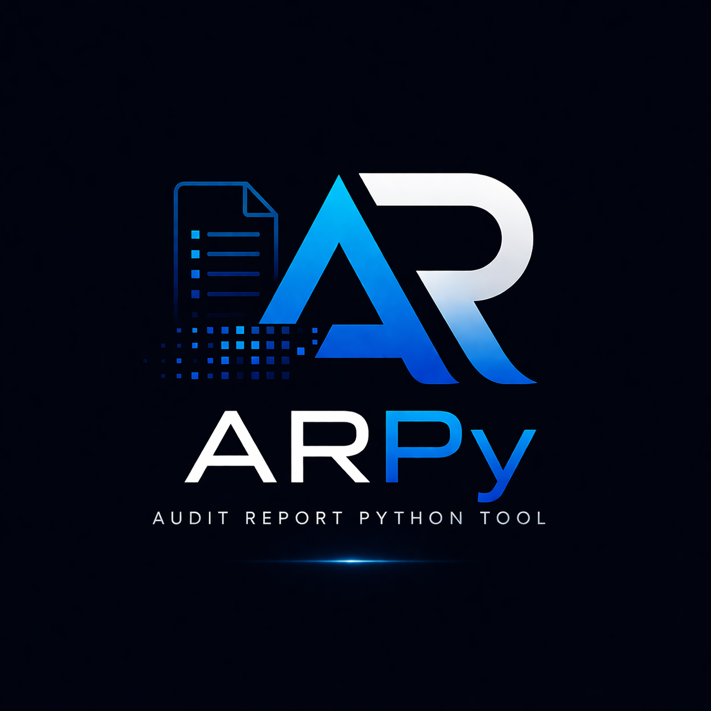
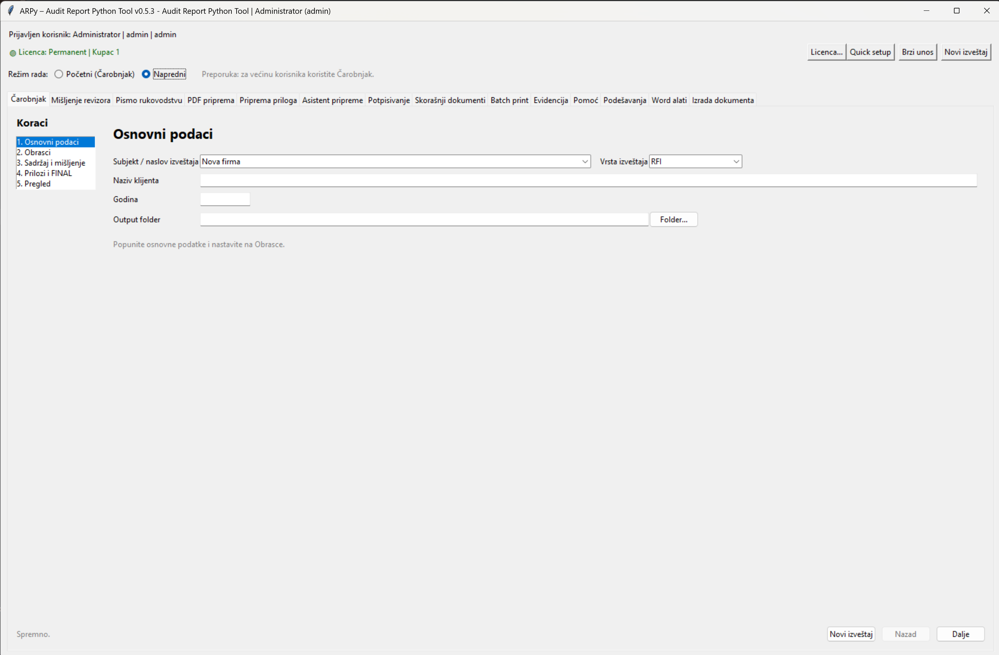

ARPy
Audit Report Python Tool
Desktop aplikacija za automatizaciju tehničke pripreme revizorskih izveštaja — od Word i PDF dokumenata do finalnog profesionalnog PDF-a sa memorandumom, potpisom, pečatom, pravilnim redosledom priloga i kontrolisanim workflow procesom.
Zatraži demo
Problem koji rešava
Završna priprema revizorskog izveštaja često nije najstručniji deo posla, ali jeste deo u kome se lako prave tehničke greške — posebno kada se radi više klijenata u kratkom roku.
- ručno spajanje Word i PDF dokumenata
- dodavanje memoranduma samo na određene strane
- pozicioniranje potpisa i pečata
- kontrola redosleda dokumenata i priloga
- ponavljanje istih koraka za veliki broj izveštaja
- ručna priprema i štampa različitih delova dokumentacije
- provera da li su svi alati, profili i podešavanja spremni za rad
ARPy ovaj proces pretvara u standardizovan workflow i smanjuje vreme tehničke pripreme izveštaja sa više sati na nekoliko minuta.
Funkcionalnosti u praksi
Objedinjavanje mišljenja, finansijskih obrazaca, napomena i priloga u jedan finalni PDF, po unapred definisanom redosledu.
Manje ručnog prevlačenja fajlova i manje rizika da se neki prilog preskoči.
Memorandum se primenjuje selektivno — na primer samo na mišljenje, bez uticaja na finansijske obrasce, napomene ili priloge.
Korisno kada različiti delovi izveštaja imaju različita pravila izgleda.
Automatsko umetanje potpisa i pečata na definisane strane ili uz prepoznatljiv tekstualni orijentir u dokumentu.
Smanjuje potrebu za ručnim podešavanjem u PDF editoru.
ARPy pomaže da finalni dokument ima logičan redosled: mišljenje, finansijski izveštaji, napomene, prilozi i dodatna dokumentacija.
Posebno važno kada se obrađuje veliki broj izveštaja.
Različiti tipovi izveštaja mogu imati različita pravila: RFI, budžetski korisnici, posebni formati, interni obrasci ili posebni klijenti.
Jednom podešena pravila mogu se koristiti ponovo.
ARPy može automatski pripremiti i organizovati štampu različitih delova dokumentacije prema pravilima definisanim kroz profile izveštaja.
Različiti delovi dokumenta mogu koristiti različite režime štampe bez ručne intervencije korisnika.
ARPy vodi evidenciju generisanih dokumenata i omogućava pregled dnevnih aktivnosti, statistike obrade i osnovnih analiza workflow procesa.
Pomaže u kontroli procesa i organizaciji rada tokom intenzivnih sezonskih rokova.
Ugrađen sistem provere pomaže da se odmah vidi da li su Word automatizacija, PDF alati, profili, konfiguracija i štampači pravilno podešeni.
Korisno za brže rešavanje tehničkih problema i stabilniji rad aplikacije.
Korisnik prolazi kroz nekoliko jasnih koraka: izbor fajlova, izbor profila, obrada i generisanje finalnog PDF-a.
Pogodno za korisnike koji ne žele da ulaze u napredna podešavanja.
Dodatni alati za korisnike kojima treba veća kontrola nad PDF obradom, prilozima, podešavanjima, memorandumima i potpisima.
Za situacije kada dokument odstupa od standardnog toka.
Standardizovan postupak smanjuje rizik od pogrešnog redosleda, izostavljenog dokumenta, pogrešnog memoranduma ili pogrešno postavljenog potpisa.
Korisno za internu kontrolu pre slanja ili predaje izveštaja.
Koraci koji se ponavljaju kod svakog klijenta postaju deo jednog kontrolisanog procesa.
Više vremena ostaje za sadržaj, pregled i kvalitet izveštaja.
Najveća korist se vidi kod revizorskih firmi koje godišnje pripremaju veći broj izveštaja i žele isti standard obrade za sve klijente.
Ušteda raste sa brojem ponovljenih procesa.
Finalni fajlovi se čuvaju kroz predvidljiv i kontrolisan proces, što olakšava pregled, arhiviranje i naknadno pronalaženje.
Manje haosa sa verzijama i ručno imenovanim fajlovima.
ARPy je desktop alat, pogodan za rad u internom okruženju firme, bez potrebe da se dokumenti šalju na spoljne servise.
Važno za poverljive klijentske i revizorske dokumente.
Kod nove instalacije ili nove lokalne baze, ARPy vodi korisnika kroz kreiranje prvog administratorskog naloga.
Nema potrebe za unapred poznatim hardcoded korisnikom.
ARPy pre kreiranja finalnog dokumenta proverava potencijalne probleme: zastarele priloge, digitalno potpisane PDF-ove, promenu broja strana i veliki rast veličine fajla tokom A4 obrade.
Posebno korisno tokom revizorske sezone, kada se obrađuje veliki broj izveštaja.
Čarobnjak upozorava ako PDF mišljenja možda ne pripada izabranom klijentu, ako je neuobičajeno velik ili ako izgleda kao raster/skeniran dokument.
Dodatna zaštita od čestih grešaka pred završno spajanje izveštaja.
Strict PDF kompresija može se podešavati kroz korisnička podešavanja: DPI i JPEG kvalitet za Low, Medium i High režim.
Korisno kada treba balansirati veličinu PDF-a i čitljivost dokumenta.
Tab PDF priprema sada uključuje detaljnu analizu PDF-a i bezbedniji Fit A4 za digitalno potpisane ili formularske PDF dokumente.
Selektivni Fit A4 rasterizuje samo problematične strane kada je to potrebno.
Ugrađena kontrola Word mišljenja pre izvoza u PDF. Proverava godinu, naziv firme, datum potpisa, grad, oznaku revizora i osnovne elemente mišljenja.
Rezime upozorenja pomaže da se potencijalni problemi uoče pre generisanja PDF-a.
Nakon generisanja PDF mišljenja ili pisma rukovodstvu, ARPy automatski prikazuje QC izveštaj sa osnovnim proverama kvaliteta PDF dokumenta.
Proveravaju se broj strana, prazne strane, tip PDF-a, tekst, elektronski potpis, formularska polja, veličina fajla i broj slika.
Nakon uspešnog kreiranja FINAL PDF-a, ARPy može automatski premestiti privremene PDF fajlove u podfolder _arpy_temp.
Output folder ostaje uredan, dok svi međukoraci ostaju sačuvani za eventualnu dijagnostiku ili naknadnu proveru.
QC izveštaj se prikazuje u posebnom prozoru, uz mogućnost kopiranja, čuvanja u TXT fajl i otvaranja generisanog PDF-a.
Korisno za brzu proveru rezultata i lakše prijavljivanje problema.
Nakon kreiranja FINAL PDF-a moguće je pokrenuti završnu proveru kompletnog dokumenta pre slanja klijentu ili digitalnog potpisivanja.
Proveravaju se broj strana, A4 format, prisustvo teksta, prazne strane, formularska polja, elektronski potpisi, veličina PDF-a i osnovna statistika dokumenta.
Aplikacija može proveriti dostupnost nove verzije, prikazati release notes, preuzeti installer i pokrenuti instalaciju iz samog ARPy-ja.
Update metadata se čita iz GitHub latest.json fajla.
Realni scenario iz prakse
Kraj sezone, rokovi su blizu, a treba završiti više izveštaja
Revizorska firma ima desetine klijenata za koje treba pripremiti finalne PDF izveštaje. Stručni deo posla je završen, ali ostaje tehnička obrada: spojiti mišljenje, finansijske obrasce, napomene i priloge, dodati memorandum, potpis i pečat, proveriti redosled, pripremiti štampu i napraviti finalni PDF.
Bez ARPy
- svaki fajl se ručno otvara i proverava
- memorandum se dodaje ručno
- potpis i pečat se ručno pozicioniraju
- dokumenti se spajaju u PDF editoru
- štampa se podešava ručno za svaki dokument
- svaki izveštaj traži dodatnu kontrolu
Kada se radi više klijenata, isti tehnički posao se ponavlja mnogo puta.
Sa ARPy
- izaberu se dokumenti i profil izveštaja
- pravila određuju gde ide memorandum
- potpis i pečat se postavljaju automatski
- finalni PDF se generiše kontrolisano
- opciono se pokreće automatizovana priprema za štampu
- proces je isti za svakog klijenta
Umesto ručne obrade svakog izveštaja, koristi se isti standardizovani postupak.
Rezultat: manje ručnog rada, manje nervoze pred rokove i manja mogućnost da tehnička greška pokvari inače završen stručni posao.
Kako izgleda proces
1. Priprema
Unose se osnovni podaci o klijentu i biraju se dokumenti koji ulaze u izveštaj.
2. Pravila
Bira se profil izveštaja koji određuje gde idu memorandum, potpis, pečat i prilozi.
3. Obrada i automatizacija
ARPy automatski obrađuje Word/PDF dokumente, primenjuje pravila profila, priprema memorandum, potpise, PDF obradu i opcione workflow korake štampe.
4. Finalni PDF i QC
Dobija se FINAL PDF, nakon čega se po želji može pokrenuti završna kontrola kvaliteta (FINAL PDF QC) pre slanja, štampe ili digitalnog potpisivanja.
Režimi rada
ARPy podržava Čarobnjak za jednostavan i brz workflow, kao i Napredni režim za korisnike kojima je potrebna veća kontrola nad dokumentima, prilozima, PDF obradom i podešavanjima.

Početni režim — Čarobnjak za najčešći workflow.

Napredni režim — dodatna kontrola i podešavanja.
Tipičan workflow
- Unos osnovnih podataka o klijentu i izveštaju
- Dodavanje dokumenata: mišljenje, obrasci, napomene i prilozi
- Izbor profila izveštaja
- Automatska obrada memoranduma, potpisa i pečata
- Generisanje finalnog PDF izveštaja
- Automatsko arhiviranje pomoćnih PDF fajlova (opciono)
- Automatska obrada i opciona split štampa dokumentacije
- Evidencija i kontrola procesa kroz analytics i health check sistem
Stabilnost i kontrola procesa
Pored automatizacije PDF i Word workflow-a, ARPy uključuje i dodatne alate za kontrolu i stabilnost procesa rada:
- provera Word automatizacije i PDF alata
- kontrola konfiguracije i profila
- provera dostupnosti štampača i sistemskih resursa
- evidencija generisanih dokumenata i aktivnosti
- dnevni pregled workflow statistike
Cilj nije samo ubrzanje rada, već i stabilniji i predvidljiviji proces pripreme dokumentacije.
Novosti u verziji 0.9.3
Verzija 0.9.3 unapređuje organizaciju izlaznih dokumenata i omogućava bezbedno arhiviranje pomoćnih PDF fajlova nakon uspešnog kreiranja FINAL PDF-a.
- dodata opcija za automatsko arhiviranje pomoćnih PDF fajlova
- privremeni PDF fajlovi se premeštaju u podfolder _arpy_temp
- FINAL, Mišljenje, Pismo i Prilozi ostaju u glavnom output folderu
- izlazni folder ostaje pregledniji tokom rada
- poboljšano čuvanje korisničkih podešavanja
- arhiviranje je potpuno opciono i može se uključiti ili isključiti u Settings
Pomoćni PDF fajlovi se više ne moraju ručno uklanjati, a istovremeno ostaju dostupni za eventualnu analizu ili rešavanje problema.